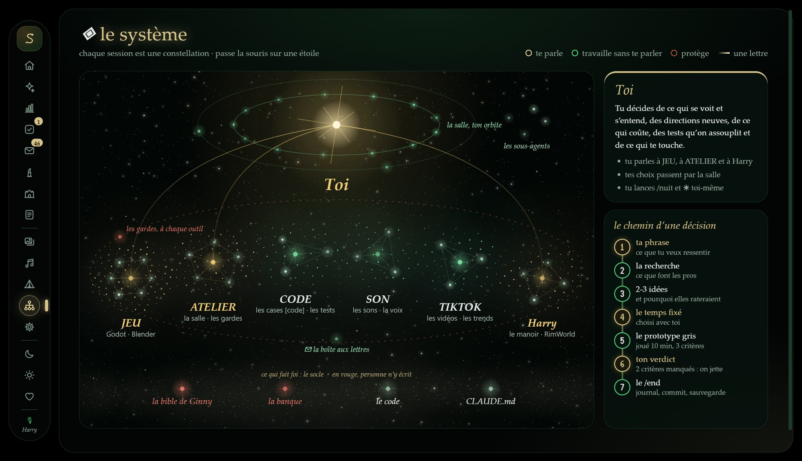
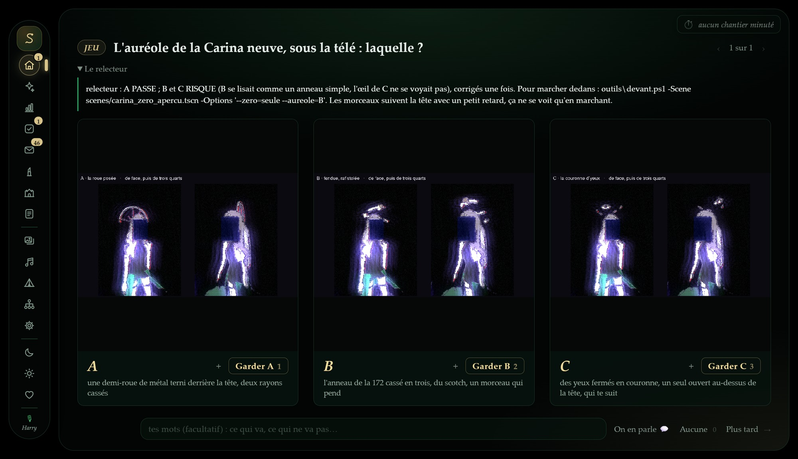
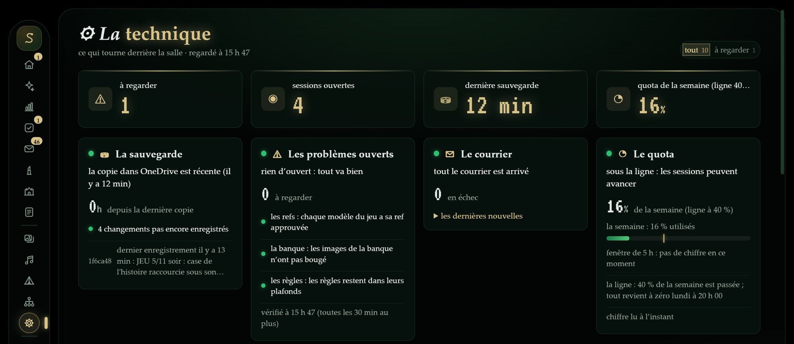
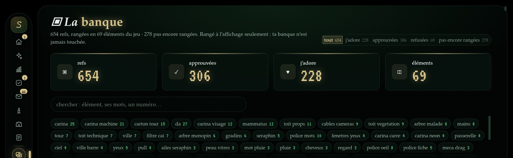

I direct AI agents. They redo the work until it’s right.Je dirige des agents IA. Ils reprennent le travail jusqu’à ce qu’il soit juste.
I design multi-agent workflows. The AI generates code under constraints; I write the validation rules, review what it produces, lock it down with tested guardrails, and decide when it ships.Je conçois des workflows multi-agents. L’IA génère le code sous contraintes ; j’écris les règles de validation, je relis ce qu’elle produit, je la verrouille avec des garde-fous testés et je décide quand c’est prêt.
Simple office automations, in an afternoon.Des automatisations de bureau simples, en une après-midi.
Sorting e-mails, an automatic report, connecting two tools. Real use case, built for myself (a monitoring and scoring pipeline): every morning, code reads official careers pages and job boards (no scraping) and applies hard filters; a Claude agent with no tools at all scores each offer against my profile and drafts a tailored CV and cover letter; a notification reaches my PC and my phone. Nothing is ever sent automatically: I read every application and send it myself.Trier des e-mails, un rapport automatique, relier deux outils. Cas d’usage réel, fait pour moi (une chaîne de veille et de scoring) : chaque matin, du code lit les pages carrières et les sites d’offres officiels (aucun scraping) et applique des filtres stricts ; un agent Claude sans aucun outil note chaque offre d’après mon profil et prépare un CV et une lettre adaptés ; une notification arrive sur mon PC et mon téléphone. Rien n’est jamais envoyé automatiquement : je relis chaque candidature et je l’envoie moi-même.
A kids’ game, built by my agents in 19 days.Un jeu pour enfants, construit par mes agents en 19 jours.
A collect-them-all game for 7-12 year-olds, on Roblox. The agents wrote about 46,000 lines of code. Because the players are minors, I set ethical guardrails first: no paid randomness (no loot boxes), clear prices. 62 Python simulators (the main one is on GitHub) replayed the whole economy and every price automatically before any child saw them.Un jeu à collectionner pour les 7-12 ans, sur Roblox. Les agents ont écrit environ 46 000 lignes de code. Parce que les joueurs sont mineurs, j’ai d’abord posé des garde-fous éthiques : pas de hasard payant (pas de loot box), des prix clairs. 62 simulateurs en Python (le principal est sur GitHub) ont rejoué automatiquement toute l’économie et chaque prix avant qu’un enfant les voie.
About twenty AI agents, one job each. Nothing goes in without my yes.Une vingtaine d’agents IA, un métier chacun. Rien n’entre sans mon oui.
Multi-agent orchestration with Claude Code and a custom orchestrator (PowerShell + Python, no agent framework), driven straight from the terminal inside the project’s Git repository, not from a chat window. Each agent has a written role (modeller, reviewer, tester…): its instructions, the tools it may use and what it is forbidden to do. Each task goes to a fresh agent, isolated on its own copy of the project (one git worktree per agent). Then the work waits in my review queue (human-in-the-loop): nothing is merged without my yes, and before every commit a check makes sure no test was dropped. When the same mistake comes back, I don’t add one more line to the prompt: I add an automated test or a hook (a guardrail) the agent cannot get around.Orchestration multi-agents avec Claude Code et un orchestrateur maison (PowerShell + Python, sans framework d’agents), pilotée directement depuis le terminal, dans le dépôt Git du projet, pas dans une fenêtre de discussion. Chaque agent a un rôle écrit (modeleur, relecteur, testeur…) : ses consignes, les outils qu’il a le droit d’utiliser et ce qui lui est interdit. Chaque tâche est confiée à un agent neuf, isolé sur sa propre copie du projet (un git worktree par agent). Puis le travail attend dans ma file de revue (human-in-the-loop) : rien n’est fusionné sans mon oui, et avant chaque commit une vérification s’assure qu’aucun test n’a disparu. Quand la même erreur revient, je n’ajoute pas une ligne de plus au prompt : j’ajoute un test automatique ou un hook (un garde-fou) que l’agent ne peut pas contourner.
Straight to the files: Directement aux fichiers : the safety hookle hook de sécurité · its testsses tests · the timeboxle minuteur · the session handoffle relais entre sessions · the night runsle travail de nuit · the project rulesles règles du projet · the reviewer agent’s promptle prompt de l’agent relecteur


One desktop app where every agent reports and every decision is made.Une application où chaque agent rend compte et où chaque décision se prend.
Built in one week with my agents (since 30 Oct 2026) (Electron + Node, PowerShell and Python behind it). Agents never ask me in the terminal: they post a question with 2-3 options here, a reviewer agent reads it first, and my click goes straight back to the session that asked.Construite en une semaine avec mes agents (depuis le 30 oct. 2026) (Electron + Node, PowerShell et Python derrière). Les agents ne me demandent rien dans le terminal : ils posent ici une question à 2-3 options, un agent relecteur la lit d’abord, et mon clic repart droit vers la session qui a demandé.





Every session reports here and every decision is made here. The system runs and maintains itself: a session that has read too much hands over to a fresh one, a reviewer agent screens each question before it reaches me, a recurring error becomes a test or a hook.Chaque session y rend compte, chaque décision s’y prend. Le système tourne et s’entretient seul : une session qui a trop lu passe le relais à une neuve, un agent relecteur filtre chaque question avant qu’elle m’arrive, une erreur qui revient devient un test ou un hook.
- Lean on tokens.Économe en tokens. Long reads go to sub-agents, a plugin reads huge logs outline-first, 97 % of the traffic is served from the prompt cache, night runs are paced on the quota.Les longues lectures partent chez des sous-agents, un plugin lit les gros journaux par le sommaire d’abord, 97 % du trafic sort du cache, les nuits avancent au rythme du quota.
- Reuse before building.Reprendre avant de construire. Before anything new, an agent looks for GitHub projects with over 1,000 stars that already solved it; licences are sorted automatically and nothing is run before it is checked.Avant toute piste neuve, un agent cherche les projets GitHub à plus de 1 000 étoiles qui l’ont déjà résolue ; les licences sont triées automatiquement et rien n’est exécuté avant vérification.
27 Oct – 5 Nov 2026, counted from the Claude Code transcripts: 109M input tokens, 4.67B read from the cache, 25.4M output; 36,669 tool calls, 1,269 of them in Blender via MCP.Du 27 oct. au 5 nov. 2026, comptés dans les conversations Claude Code : 109 M tokens en entrée, 4,67 Md lus depuis le cache, 25,4 M en sortie ; 36 669 appels d’outils, dont 1 269 dans Blender via MCP.
A first-person game demo with zero AI-made images.Une démo de jeu à la première personne, sans aucune image faite par IA.
Godot for the game, Blender for 3D (driven through MCP). The 3D models are built by code, from references I picked. Everything is playable in grey blocks first, then dressed. 923 automated tests and tested safety hooks protect it. Still in production.Godot pour le jeu, Blender pour la 3D (piloté par MCP). Les modèles 3D sont construits par du code, d’après des références que j’ai choisies. Tout est jouable en blocs gris d’abord, puis habillé. 923 tests automatiques et des hooks de sécurité testés le protègent. Encore en production.
 first: grey blocks, playabled’abord : blocs gris, jouable
first: grey blocks, playabled’abord : blocs gris, jouable then: dressed, approved by meensuite : habillé, validé par moi
then: dressed, approved by meensuite : habillé, validé par moiAI is easy to use. I make it safe to use.L’IA, tout le monde s’en sert. Moi, je la rends sûre.
- Guardrails that are testedDes garde-fous testésHooks block dangerous actions before they happen: an agent cannot write to the main branch, push, or touch protected files. The hooks have their own tests.Des hooks bloquent les actions dangereuses avant qu’elles arrivent : un agent ne peut pas écrire sur la branche principale, pousser, ni toucher aux fichiers protégés. Les hooks ont leurs propres tests.
- Prompt injectionL’injection de promptThe #1 risk in the OWASP Top 10 for LLM applications (LLM01). Text from the internet (job offers, web pages) is only read by an agent with no tools: even if a page tries to manipulate it, it can do nothing.Le risque n°1 du Top 10 OWASP pour les applications LLM (LLM01). Le texte venu d’internet (offres d’emploi, pages web) n’est lu que par un agent sans aucun outil : même si une page essaie de le manipuler, il ne peut rien faire.
- Personal dataLes données personnellesPhone notifications carry nothing personal. Before a project goes public, a script checks that no private data leaks into it.Les notifications sur téléphone ne contiennent rien de personnel. Avant qu’un projet devienne public, un script vérifie qu’aucune donnée privée n’y fuit.
- AI mistakes and biasLes erreurs et les biais de l’IAWhen the AI makes the same error again and again (a systematic bias), it becomes an automated test, not a hope. A reviewer agent and I check the result before it counts.Quand l’IA refait sans cesse la même erreur (un biais systématique), elle devient un test automatique, pas un espoir. Un agent relecteur et moi vérifions le résultat avant qu’il compte.
- Tools I installLes outils que j’installeNever in permission-bypass mode. A new MCP server is checked before use; an installer comes from the official site, with its signature and an antivirus scan.Jamais en mode qui contourne les permissions. Un nouveau serveur MCP est vérifié avant usage ; un installateur vient du site officiel, avec sa signature et un scan antivirus.
I also draw, which trains my eye for judging what agents produce.Je dessine aussi : c’est ce qui forme mon œil pour juger ce que produisent les agents.
Seven years of pencil, ink, digital, pixel art and 3D. Every piece is mine, no generated images.Sept ans de crayon, d’encre, de numérique, de pixel art et de 3D. Chaque pièce est de moi, aucune image générée. See all 271 pieces →Voir les 271 pièces →


Self-taught since 13: 7 years of building code, servers and games before agents built them for me.Autodidacte depuis 13 ans : 7 ans à construire du code, des serveurs et des jeux avant que des agents construisent pour moi.
- 2019My first Minecraft server, at 13. About ten more after it.Mon premier serveur Minecraft, à 13 ans. Une dizaine d’autres ensuite.
- 2021ZebiCraft, a Minecraft modpack published on CurseForge. My first game, in Unity.ZebiCraft, un modpack Minecraft publié sur CurseForge. Mon premier jeu, dans Unity.
- 2022A 3D world map and a 55-hour Unity project for school talks. A 2D RPG with multiplayer I set up myself.Une carte du monde en 3D et un projet Unity de 55 h pour des exposés. Un RPG 2D avec un multijoueur que j’ai mis en place moi-même.
- 2023My first paid commission ($200, pixel art). A platformer, a small Python game, Blender and my first shaders.Ma première commande payée (200 $, pixel art). Un jeu de plateforme, un petit jeu en Python, Blender et mes premiers shaders.
- 2024-25Self-study: after the first year of design school, I kept learning on my own.Autoformation : après la 1re année d’école de design, j’ai continué à apprendre seule.
- 2026I direct AI agents on full-size projects: I review their code, track down bugs with them, and fix the small things by hand.Je dirige des agents IA sur des projets de taille réelle : je relis leur code, je traque les bugs avec eux et je corrige moi-même les petites choses.
Want to talk?On en parle ?
French (native), English (C1). Before this: IT sales advisor at Chip7, food bank volunteer, first year of a game design bachelor at e-artsup. Based in France, Paris time. Remote, or on site with relocation. Available now.
Self-taught, but strict about tests: what I deliver is checked by automated tests, by a reviewer agent and by me before anyone uses it, so AI mistakes are caught early, and it follows the security rules you set.Français natif, anglais C1. Avant : conseillère en vente informatique chez Chip7, bénévole à la banque alimentaire, 1re année de bachelor game design à e-artsup. En France, heure de Paris. À distance, ou sur place avec déménagement. Disponible tout de suite.
Autodidacte, mais stricte sur les tests : ce que je livre est vérifié par des tests automatiques, par un agent relecteur et par moi avant d’être utilisé, pour que les erreurs de l’IA soient attrapées tôt, et dans le respect de vos règles de sécurité.
This site was built by directing Claude Code in a local Git repository: I designed it, split the work, set the rules, and checked every page before publishing it.Ce site a été fait en dirigeant Claude Code dans un dépôt Git local : je l’ai conçu, j’ai découpé le travail, posé les règles et vérifié chaque page avant de la publier.